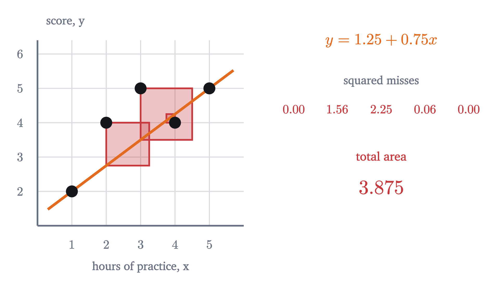
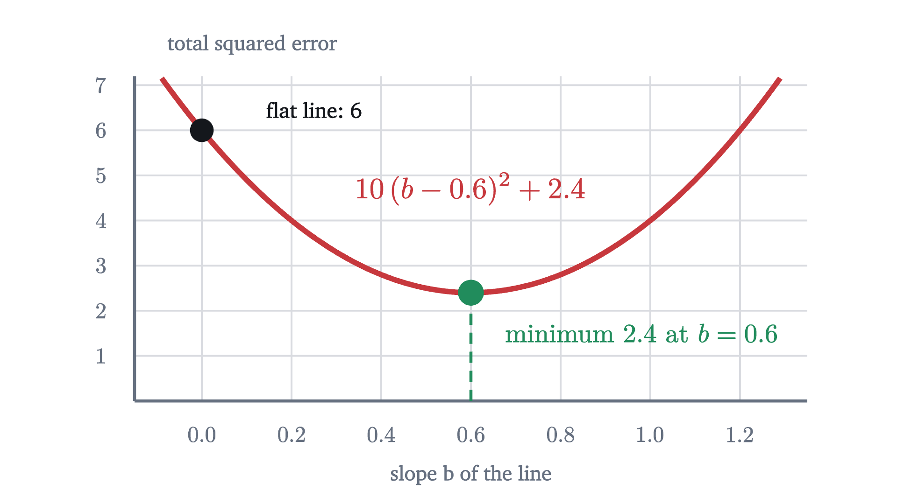
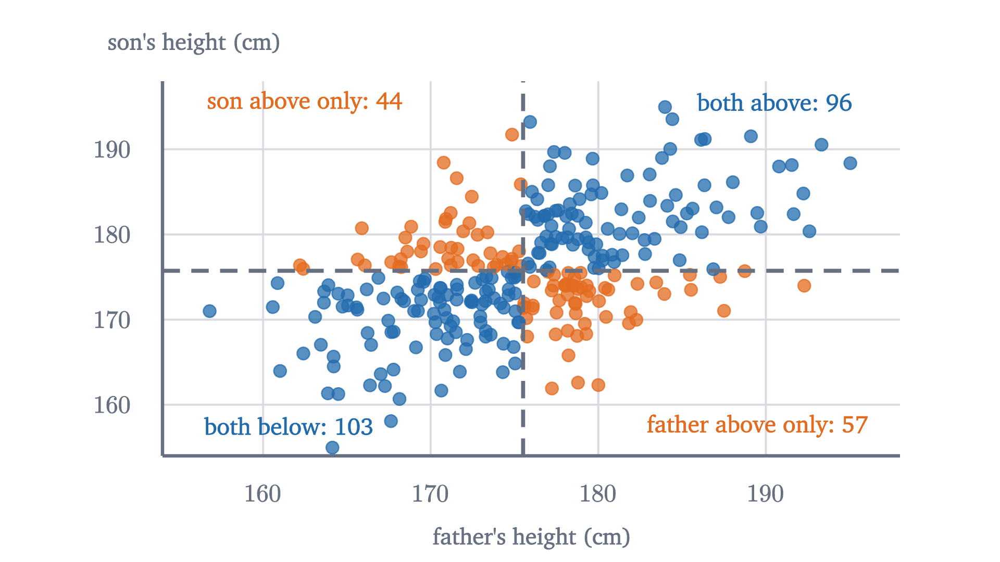
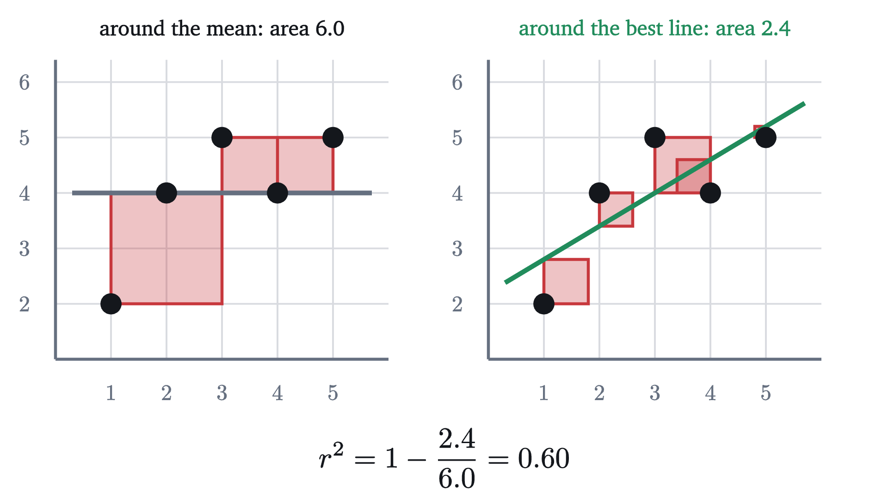
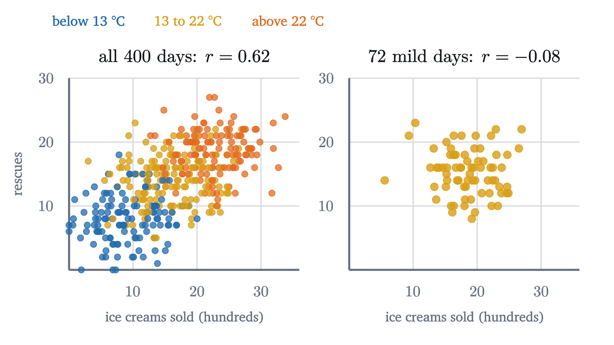
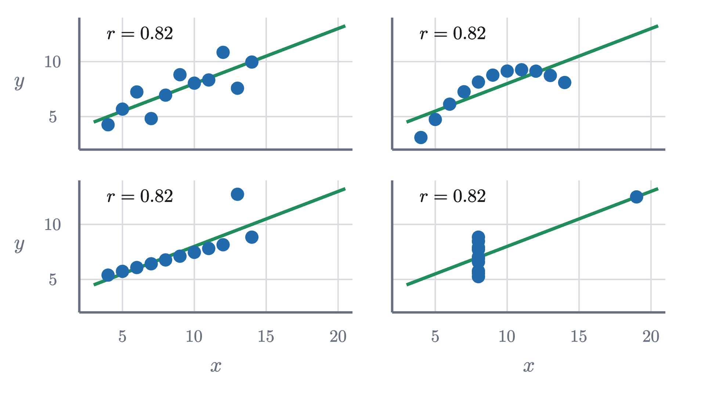

Correlation and the line of best fit, derived
We derive the least-squares line, define the correlation r and prove it lies between -1 and 1, then explain regression to the mean and why r is not causation.
AssumesMean, median and standard deviation: what each one saysWhat slope means, and why y = mx + b is a line
Tall fathers have tall sons, but not as tall as themselves: fathers who stand 184 cm have sons who average about 180. Short fathers have short sons, but not as short: fathers of 168 cm have sons who average about 172. Each generation, it seems, is pulled toward the middle.
Follow that thought and you reach an absurd conclusion. If every generation is closer to average than the one before, then after enough generations everyone should be nearly the same height. Yet the spread of heights among sons is the same as among fathers. Francis Galton noticed this pattern in the 1880s and called it “regression towards mediocrity”, which is where the word regression in statistics comes from. Resolving the paradox takes three things: what it means to fit a line to scattered data, a number that measures how tightly the data follow the line, and a hard look at what that number can and cannot tell you.
A cloud of points and a line through it
The figure above is a scatter plot: each dot stands for one father-son pair, placed at the father’s height horizontally and the son’s height vertically. The dots form a tilted cloud. Knowing the father’s height tells you something about the son’s, but far from everything.
To see how a line gets fitted to a cloud, we shrink the problem until it can be done by hand. Five students practice for $x = 1, 2, 3, 4, 5$ hours and score $y = 2, 4, 5, 4, 5$ on a test. A line $y = a + bx$ (intercept $a$, slope $b$) predicts a score for each student, and the prediction misses by $y_i - (a + bx_i)$. This vertical miss is called a residual.
What should “best” mean? We want all the residuals small at once, so we need one number that summarizes them. Their plain sum will not do: a line that misses one point by $+10$ and another by $-10$ would get a perfect total of zero. The same problem came up for the spread of data in the first lesson of this series, and we adopt the same repair. Square each residual, so that misses in both directions count against the line, and add.
Pause and try
An obvious candidate is the line through the first and last points, $(1, 2)$ and $(5, 5)$, which is $y = 1.25 + 0.75x$. Find its five residuals and the sum of their squares.
Show answerHide answer
The line predicts $2, 2.75, 3.5, 4.25, 5$. The residuals are $2 - 2 = 0$, $4 - 2.75 = 1.25$, $5 - 3.5 = 1.5$, $4 - 4.25 = -0.25$ and $5 - 5 = 0$. The squares are $0, 1.5625, 2.25, 0.0625, 0$, with sum $3.875$.

That line runs too low through the middle: two points sit well above it, and none is far below. Tilting and shifting it should shrink the squares.
The animation suggests that the best line has slope 0.6 and passes through $(3, 4)$, the point whose coordinates are the mean of the $x$ values and the mean of the $y$ values. An animation tries only some lines. We want a proof that covers all of them, and a formula that works for any data.
Deriving the least-squares line
Let the data be $(x_1, y_1), \dots, (x_n, y_n)$, with means $\bar x$ and $\bar y$, and suppose the $x_i$ are not all equal. The quantity to minimize is
The means are the natural reference point, so measure everything from them. Write $u_i = x_i - \bar x$ and $v_i = y_i - \bar y$ for the deviations, and note that $\sum u_i = 0$ and $\sum v_i = 0$, because deviations from a mean always sum to zero. Three sums will appear over and over:
For the five students, $u = (-2, -1, 0, 1, 2)$ and $v = (-2, 0, 1, 0, 1)$, so $S_{xx} = 10$, $S_{yy} = 6$ and $S_{xy} = 4 + 0 + 0 + 0 + 2 = 6$.
Each term has a meaning. The term $nc^2$ is the penalty for a line that misses the point of means, and it vanishes when $c = 0$: the best line always passes through $(\bar x, \bar y)$. The term with $b$ is the penalty for a wrong tilt. A reader who knows calculus can reach the same formulas by setting the derivatives of $Q$ with respect to $a$ and $b$ to zero, as in the lesson on optimization. Completing the square has the advantage of proving at the same stroke that the point found is a minimum and the only one.
For the five students, $b = 6/10 = 0.6$ and $a = 4 - 0.6 \times 3 = 2.2$. The best line is $y = 2.2 + 0.6x$, and its total squared error is $6 - 36/10 = 2.4$, as the animation found.

Correlation: how tightly the points follow the line
The slope tells us how steep the line is. It does not tell us how well the points stick to it, and it changes if we change units: measure practice in minutes and the slope becomes 0.01. We want a measure of the strength of the linear association that ignores units.
The sum $S_{xy} = \sum (x_i - \bar x)(y_i - \bar y)$ already detects association. A point above both means, or below both, contributes a positive product. A point above one mean and below the other contributes a negative product. If high $x$ tends to go with high $y$, positive products dominate.

$S_{xy}$ still depends on the units and on $n$. Dividing by the geometric mean of $S_{xx}$ and $S_{yy}$ removes both.
The condition that neither variable is constant keeps the denominator from being zero. Since the sample standard deviations are $s_x = \sqrt{S_{xx}/(n-1)}$ and $s_y = \sqrt{S_{yy}/(n-1)}$, the same number can be written $r = \frac{1}{n-1}\sum \frac{x_i - \bar x}{s_x} \cdot \frac{y_i - \bar y}{s_y}$: the average product of the two variables once each is expressed in standard deviations from its mean. Changing units rescales a deviation and its standard deviation together, so $r$ has no units.
Pause and try
Compute $r$ for the five students, using $S_{xx} = 10$, $S_{yy} = 6$, $S_{xy} = 6$.
Show answerHide answer
$r = \dfrac{6}{\sqrt{10 \times 6}} = \dfrac{6}{\sqrt{60}} \approx 0.775$.
For the simulated fathers and sons, $r = 0.51$. How large can $r$ be? The answer comes from a famous inequality, and we already hold its proof.
What $r^2$ measures
The least-squares theorem gave the smallest possible total squared error as $S_{yy} - S_{xy}^2/S_{xx}$. Factor out $S_{yy}$ and the definition of $r$ appears:
Now $S_{yy}$ is itself a total squared error: it is the error of the flat line $y = \bar y$, the best prediction available to someone who ignores $x$ altogether. So $1 - r^2$ is the fraction of that error which remains after the line is fitted, and $r^2$ is the fraction removed.

The fraction is sobering for moderate correlations. The fathers and sons have $r \approx 0.5$, so $r^2 \approx 0.25$: knowing the father’s height removes only a quarter of the squared error in predicting the son’s.
Regression to the mean
The slope and the correlation are connected. Because $b = \frac{S_{xy}}{S_{xx}}$ and $r = \frac{S_{xy}}{\sqrt{S_{xx}S_{yy}}}$,
Put this into the line $\hat y - \bar y = b(x - \bar x)$, where $\hat y$ denotes the predicted value, and divide by $s_y$:
In words: if $x$ is $z$ standard deviations above its mean, the predicted $y$ is $rz$ standard deviations above its mean.
Pause and try
Take fathers and sons to have mean 176 cm and standard deviation 7 cm in both generations, with $r = 0.5$. A father is 190 cm tall. What does the regression line predict for his son? And if all you know is that a son is 190 cm, what is the prediction for his father?
Show answerHide answer
The father is $(190 - 176)/7 = 2$ standard deviations above the mean. The prediction for the son is $0.5 \times 2 = 1$ standard deviation above, which is 183 cm, not 190. The second question has the same answer by the same calculation with the roles exchanged: the predicted father of a 190 cm son is 183 cm, not 204.
Since $|r| < 1$ unless the data are perfectly linear, the prediction for any $x$ other than $\bar x$ is fewer standard deviations from the mean than the input. This is regression to the mean, and the second half of that answer shows that it has nothing to do with the passage of time. Tall sons have fathers who are, on average, shorter than they are.
Here is the resolution of the opening paradox. A father’s height only partly determines his son’s. Among fathers of 190 cm, the sons scatter around 183 cm, with a spread nearly as large as that of the whole population: the leftover fraction is $1 - r^2 = 0.75$ of the variance. Some of those sons are 195 cm. Meanwhile, some sons of average fathers are 190 cm too. The very tall men of the next generation are supplied by fathers of every height, mostly ones shorter than themselves. The averages regress, the scatter restores the spread, and the distribution of heights stays the same from one generation to the next.
Regression to the mean appears wherever two measurements are imperfectly correlated. Students with the highest scores on a first test score lower, on average, on the second, and those with the lowest scores improve. No explanation in terms of effort or complacency is needed, although one is nearly always offered.
Correlation is not causation
A correlation says that two variables move together in the data. It does not say why. Over a year of days in a seaside town, ice cream sales and the number of swimmers rescued by lifeguards are strongly correlated. Nobody concludes that ice cream makes people drown.

In the simulation $r = 0.62$ across all 400 days. Hot days are in the upper right of the cloud and cold days in the lower left, and that arrangement is the whole correlation. Among the 72 days when the temperature was between 18 and 22 °C, $r = -0.08$, which is indistinguishable from zero. Temperature here is a confounder, or lurking variable: a third quantity that influences both of the others. Holding it nearly fixed removes the association it created.
When $x$ and $y$ are correlated, at least four explanations are open: $x$ influences $y$; $y$ influences $x$; a third variable influences both; or the correlation is a chance pattern in a small sample, which is a question for a hypothesis test. The data alone cannot choose among them. What can is an experiment in which the experimenter sets $x$ by a random device, so that nothing else can be systematically tied to it. Give out free ice cream on randomly chosen days, and the rescues will not change.
Worked examples
What $r$ does not see
The correlation coefficient measures how well a straight line describes the data, and nothing else. In 1973 the statistician Francis Anscombe published four small data sets to make the point.

A strong relationship can also have no correlation at all. For the five points $(-2, 4), (-1, 1), (0, 0), (1, 1), (2, 4)$, which lie exactly on the curve $y = x^2$, we get $\bar x = 0$ and $S_{xy} = \sum x_i(y_i - \bar y) = -8 - 1 + 0 + 1 + 8 - \bar y \sum x_i = 0$, so $r = 0$. Here $y$ is completely determined by $x$, and $r$ reports nothing, because the relationship is not linear. Always look at the scatter plot before trusting $r$.
Stepping back
The hard step was the first one: deciding what “best line” should mean, and then showing that the choice has a single answer with a formula. Completing the square did that, and the same line of algebra then handed us the bound on $r$ and the meaning of $r^2$ at no extra cost. One identity, $Q = S_{xx}(b - S_{xy}/S_{xx})^2 + nc^2 + S_{yy}(1 - r^2)$, contains the slope, the intercept, the Cauchy-Schwarz inequality and the fraction of variation explained.
The limits matter as much as the formulas. The line describes averages, and individuals scatter around it. The correlation sees only straight-line patterns. And neither says anything about cause until someone runs an experiment.
Check yourself
In a large group of adults, height and weight have correlation $r = 0.7$. Which conclusion is justified?
Problems
The first three are computations. The next four ask for reasons. The last is a challenge.
Problem 1
Find the least-squares line, $r$ and $r^2$ for the points $(1, 2), (2, 3), (3, 5), (4, 6)$.
Show solutionHide solution
$\bar x = 2.5$ and $\bar y = 4$. Deviations: $u = (-1.5, -0.5, 0.5, 1.5)$, $v = (-2, -1, 1, 2)$. $S_{xx} = 2.25 + 0.25 + 0.25 + 2.25 = 5$, $S_{yy} = 4 + 1 + 1 + 4 = 10$, $S_{xy} = 3 + 0.5 + 0.5 + 3 = 7$. Slope $b = 7/5 = 1.4$, intercept $a = 4 - 1.4 \times 2.5 = 0.5$, so the line is $y = 0.5 + 1.4x$. $r = 7/\sqrt{50} \approx 0.990$ and $r^2 = 49/50 = 0.98$.
Problem 2
For a set of data, $\bar x = 50$, $s_x = 10$, $\bar y = 70$, $s_y = 8$ and $r = 0.6$. Find the regression line of $y$ on $x$ and the predicted $y$ at $x = 65$.
Show solutionHide solution
$b = r s_y/s_x = 0.6 \times 8/10 = 0.48$, and $a = \bar y - b\bar x = 70 - 24 = 46$. The line is $\hat y = 46 + 0.48x$. At $x = 65$: $\hat y = 46 + 31.2 = 77.2$. Check in standard units: $x$ is 1.5 standard deviations above its mean, so $\hat y$ is $0.9$ above, $70 + 0.9 \times 8 = 77.2$.
Problem 3
Two variables have $r = -0.9$. (a) What fraction of the squared variation in $y$ does the regression line account for? (b) If $x$ is 1 standard deviation above its mean, what is the prediction for $y$? (c) Is the association weaker than one with $r = 0.5$?
Show solutionHide solution
(a) $r^2 = 0.81$. (b) $-0.9$ standard deviations: below the mean of $y$ by nine tenths of a standard deviation. (c) No, it is much stronger. The sign of $r$ gives the direction of the line and $|r|$ gives the strength; $r = 0.5$ accounts for only 25% of the variation.
Problem 4
Show that the residuals of the least-squares line always sum to zero. Is the same true of any line through the point of means?
Show solutionHide solution
The residuals are $y_i - a - bx_i$. Their sum is $\sum y_i - na - b\sum x_i = n\bar y - na - bn\bar x = n(\bar y - a - b\bar x)$. For the least-squares line $a = \bar y - b\bar x$, so this is zero. The calculation used only that relation between $a$ and $b$, and not the value of $b$. A line passes through $(\bar x, \bar y)$ exactly when $\bar y = a + b\bar x$, so yes: the residuals sum to zero for every line through the point of means, and for no other line.
Problem 5
Heights $x$ are recorded in centimeters and weights $y$ in kilograms, giving slope $b$, intercept $a$ and correlation $r$. The heights are then converted to meters, $x' = x/100$. Find the new slope, intercept and correlation.
Show solutionHide solution
The new deviations are $u_i' = u_i/100$, so $S_{x'x'} = S_{xx}/10^4$ and $S_{x'y} = S_{xy}/100$, while $S_{yy}$ is unchanged. The new slope is $\frac{S_{xy}/100}{S_{xx}/10^4} = 100b$ (kilograms per meter is 100 times kilograms per centimeter). The new intercept is $\bar y - 100b \cdot \bar x/100 = a$, unchanged. The new correlation is $\frac{S_{xy}/100}{\sqrt{S_{xx}S_{yy}}/100} = r$, unchanged.
Problem 6
Besides the regression line of $y$ on $x$, one can fit the regression line of $x$ on $y$, which predicts $x$ from $y$ and minimizes squared horizontal misses; by symmetry its equation is $x - \bar x = b'(y - \bar y)$ with $b' = S_{xy}/S_{yy}$. (a) Show that $bb' = r^2$. (b) Drawn on the same axes, with $x$ horizontal, what are the slopes of the two lines when both variables have the same standard deviation and $r = 0.5$? (c) When do the two lines coincide?
Show solutionHide solution
(a) $bb' = \frac{S_{xy}}{S_{xx}} \cdot \frac{S_{xy}}{S_{yy}} = \frac{S_{xy}^2}{S_{xx}S_{yy}} = r^2$. (b) With equal standard deviations, $b = b' = r = 0.5$. The first line has slope 0.5. The second is $x - \bar x = 0.5(y - \bar y)$, which in the usual orientation is $y - \bar y = 2(x - \bar x)$, slope 2. Both pass through the point of means, one flatter than the diagonal and one steeper. This is regression to the mean in both directions. (c) If $r = 0$ the lines are horizontal and vertical. Otherwise the second line has slope $1/b'$ in the usual orientation, so they coincide when $b = 1/b'$, that is, $bb' = r^2 = 1$: only when the points lie exactly on a line.
Problem 7
Compute $r$ for the four points $(-1, 1), (0, 0), (1, 1), (2, 4)$ on the curve $y = x^2$, and compare with the lesson’s example where $r = 0$. What made the difference?
Show solutionHide solution
$\bar x = 0.5$, $\bar y = 1.5$. Deviations: $u = (-1.5, -0.5, 0.5, 1.5)$, $v = (-0.5, -1.5, -0.5, 2.5)$. $S_{xx} = 5$, $S_{yy} = 0.25 + 2.25 + 0.25 + 6.25 = 9$, $S_{xy} = 0.75 + 0.75 - 0.25 + 3.75 = 5$. So $r = 5/\sqrt{45} \approx 0.745$. The curve is the same, but these $x$ values are not symmetric about 0: most of them are on the rising side of the parabola, where a line is a fair description. The value of $r$ depends on which part of a curved relationship was sampled, another reason to look at the plot.
Problem 8
(An association that reverses.) Six measurements fall in two groups. Group A: $(1, 3), (2, 2), (3, 1)$. Group B: $(6, 8), (7, 7), (8, 6)$. (a) Find $r$ within each group. (b) Find $r$ for all six points together. (c) Explain how both can be true, and what it means for interpreting a correlation.
Show solutionHide solution
(a) In group A the points satisfy $y = 4 - x$ exactly, and in group B they satisfy $y = 14 - x$. Points on a line of negative slope have $r = -1$ in each group.
(b) For all six, $\bar x = 27/6 = 4.5$ and $\bar y = 27/6 = 4.5$. Deviations: $u = (-3.5, -2.5, -1.5, 1.5, 2.5, 3.5)$ and $v = (-1.5, -2.5, -3.5, 3.5, 2.5, 1.5)$. $S_{xx} = 2(12.25 + 6.25 + 2.25) = 41.5$, and $S_{yy} = 41.5$ likewise. $S_{xy} = 5.25 + 6.25 + 5.25 + 5.25 + 6.25 + 5.25 = 33.5$. So $r = 33.5/41.5 \approx 0.81$.
(c) Within each group, larger $x$ goes with smaller $y$. But group B sits higher than group A on both variables, and the difference between the groups dominates the pooled data. The group label is a confounder: it influences both $x$ and $y$. Pooled, the correlation is strongly positive; holding the group fixed, it is perfectly negative. A correlation computed across a mixed population can differ in size, and even in sign, from the relationship inside every subgroup, so a correlation alone cannot tell you what would happen to $y$ if you changed $x$.